M3
User Manual
A practical guide to arranging, selecting, and performing Korg M3 patches.
PatchGrid is a performance-oriented patch organizer for the Korg M3. It presents patches as a 4 x 4 grid so you can select sounds quickly, arrange them into pages, and adjust useful performance controls from one screen.
Feature summary
Launch and layout
- Instant patch launch from a visual 4 x 4 slot grid
- Multi-page PatchGrids for larger sound sets
- Independent reorder modes for PatchGrids and pages
- One-touch selection sends the chosen patch directly to the M3
- Dedicated Play view for quick access during performance
- Dedicated Edit view for building and managing PatchGrids
- Lock or unlock slot-grid dragging in Play view
- Template PatchGrids filled from enabled M3 banks
- Play-view patch search from the search icon
Sounds and storage
- Stores both PROG and COMBI patches in the same PatchGrid workflow
- Up to 16 slots per page
- Up to 8 pages per PatchGrid
- Up to 128 saved PatchGrids
- Default PatchGrid auto-populates starter sounds from PROG and COMBI categories
- Default PatchGrid includes starter notes explaining its sample sounds
Per-slot control
- Per-page, per-patch performance-control overrides
- Saved controls include Tempo, Volume, EQ, Transpose, SW1, SW2, Drum Track, and KARMA
- 16 slot colours with Auto Colour and quick two-tap colour selection
- Patch search for assigning sounds to slots
Editing and management
- PatchGrid naming with duplicate-name protection and input validation
- Rename, duplicate, clear, and hide PatchGrids
- Duplicate PatchGrids with all pages and slot data under a new name
- Duplicate and clear individual pages
- Copy and paste single slots between positions
- Remembers the last selected page and slot when reloaded
Disclaimer
Before you begin
PatchGrid supports direct USB-wired MIDI and Bluetooth MIDI connections between the iPad and the Korg M3. Apple Network MIDI, RTP-MIDI, Wi-Fi MIDI, and other network connection methods are not supported. Network MIDI ports may still appear in the MIDI selectors; do not select them for the M3 connection.
The PatchGrid Boot screen
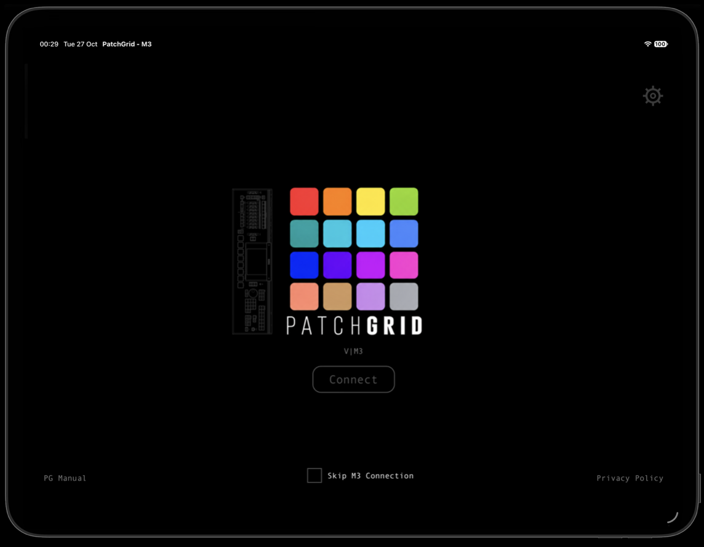
The Boot screen is the first screen used to prepare PatchGrid. It detects the connected M3 and supported expansion boards, loads the available patch data, and provides the MIDI connection controls.
The Keyboard selector can be used to choose from the available MIDI inputs, including multiple connected keyboard inputs. M3 Input selects the MIDI input used to receive data from the M3, and M3 Output selects the MIDI output used to send patches and controls to the M3. Select the supported direct USB or Bluetooth M3 ports only: Apple Network MIDI and RTP-MIDI ports are not supported, even if they appear in these lists. Use Connect after selecting the required devices.
Select Skip M3 Connection when you want to use PatchGrid without connecting to an M3. PatchGrid remains available for offline editing, browsing, and organizing patches; the M3 will not receive patch changes until a connection is made.
The Inventory text button switches the visible patch inventory between patches imported from the M3 and the preset patches supplied with PatchGrid. Use it to confirm which patch source is being displayed before assigning sounds.
The Privacy Policy and PG Manual text links open the product privacy information and this user manual.
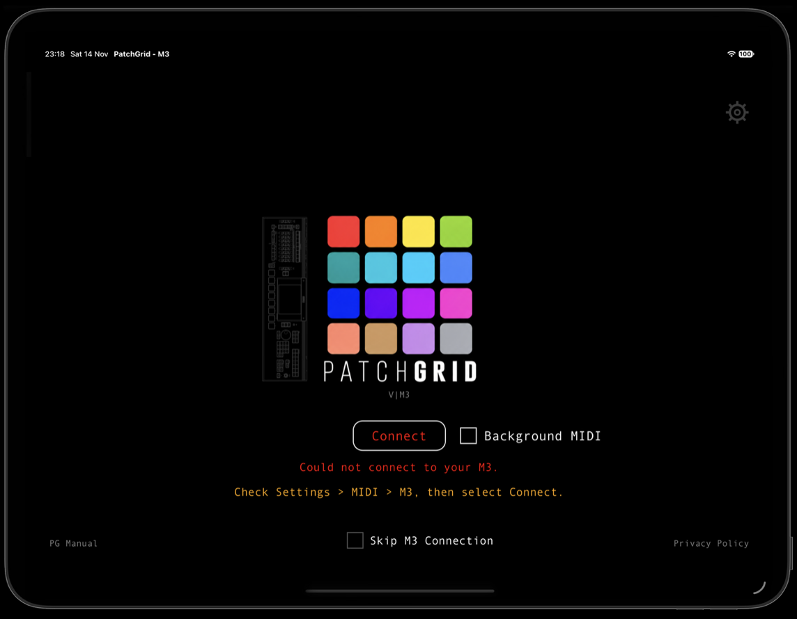
The PatchGrid screen
 Play selects and performs patches. Edit manages PatchGrids and pages, edits notes, and shows the Grid Table. Settings opens MIDI, Config, Import, and Patch tools.
Play selects and performs patches. Edit manages PatchGrids and pages, edits notes, and shows the Grid Table. Settings opens MIDI, Config, Import, and Patch tools.
The centre of Play mode is a 4 x 4 grid of 16 slots. A slot can contain a Program, a Combination, or be empty. Each PatchGrid can contain up to 8 pages, and the application supports up to 128 saved PatchGrids.
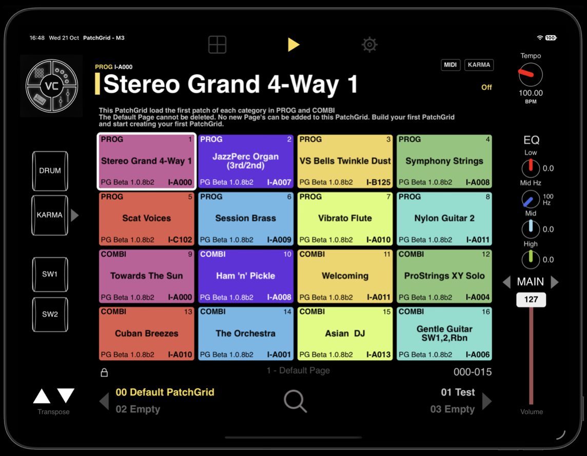
The MAIN, VOL, slider, and EQ controls sit lower in the Play view; DRUM, KARMA, SW1, and SW2 are repositioned on the left; and the transpose controls sit farther right. The VC logo is visible in Play mode and hidden in Edit mode. The PatchGrid selector uses a 2 x 2 layout, with its previous and next arrows kept within the selector width.
The search icon is in the Play view header. Use it to search loaded patch names or patch numbers, filter results by patch type or bank, preview a result, and assign it to the selected slot.
Play mode
Select a patch
- Click Play.
- Click a filled slot.
- PatchGrid sends the corresponding bank and program change to the M3.
Click an empty slot to select it. In Play mode, drag it through the available patches to populate it, or use Edit mode when you want to browse and assign a specific patch.
Change page or PatchGrid
- Use the arrows beside the grid to change page.
- Use the PatchGrid selector arrows to move through saved PatchGrids.
- Select a PatchGrid entry to load it.
- In Edit mode, tap the combined reorder icon beside PatchGrid to turn PatchGrid reorder mode on or off.
- Use the Pages reorder icon separately when you want to reorder pages.
When a reorder mode is on, its icon is yellow and remains active until tapped again. Drag the selected PatchGrid or page to reorder it; the insertion marker shows whether it will be placed above or below the target row. When reorder mode is off, dragging the list scrolls it. PatchGrid and page reordering are independent, and the order is saved and restored after the app restarts. The first page of the built-in Default PatchGrid cannot be deleted or cleared, and its next-page arrow is hidden when no next page is available.
The slot-grid lock icon is at the bottom-left of the grid. Tap the lock to unlock slot dragging, move slots to different positions within the current page, then tap it again to lock the grid.
Template PatchGrids are created from the enabled INT and USR banks in Settings > Config > Grid/Pages. Each enabled bank supplies a PatchGrid page pre-filled with patches from the loaded M3 patch list. The Template control in Play mode selects the generated template view.
Performance controls
- Drum toggles the drum track.
- KARMA On/Off toggles KARMA.
- SW1 and SW2 toggle the M3 switches.
- TRANSPOSE changes transpose from -12 to +12 semitones.
- Tempo and volume can be adjusted from the performance panel. Drag rotary controls or the volume slider vertically.
Bi-directional M3 control
When PatchGrid is connected through the selected M3 Input and M3 Output ports, supported changes can travel in both directions. Changes made in PatchGrid are sent to the M3. Changes made on the M3 to Tempo, Drum Track, KARMA, SW1, SW2, and Program or Drum Track EQ are immediately reflected in the controls displayed for the selected PatchGrid slot. Program and Drum Track EQ synchronization applies to PROG patches.
M3-originated control changes are shown as live values. They are not sent back to the M3 and are not automatically saved as slot overrides. Use Save on a normal PatchGrid page when you want to retain the current supported performance-control values for that patch and page.
PatchGrid also recognizes patch selections made on the M3. It uses the M3 mode to distinguish a PROG from a COMBI, then matches the bank and program number against the loaded patch information. When a match is found, the selected PatchGrid slot immediately displays that patch and its type. If the selection cannot be matched, the current slot remains unchanged.
Modal popups
Play mode provides larger modal controls for Tempo and KARMA. A modal temporarily covers the slot grid so the selected control can be adjusted directly.
Tempo popup
Tap the displayed tempo value to open the Tempo popup. It starts with the selected slot's current tempo and supports values from 40.00 to 300.00 BPM.
Choose the keypad icon to enter a tempo directly, including a decimal value, then tap Set to apply it. Choose the encoder icon to adjust the value with a rotary drag, then tap Set. The pink arrows change the tempo by 1 BPM and the blue arrows fine-tune it by 0.01 BPM.
Enable Presets to show the supplied tempo choices: Slow 60, Medium Slow 80, Medium 100, Fast 130, and Very Fast 145 BPM. Selecting a preset applies it immediately. Tap outside the popup, press Escape, or move focus away to close it without applying an unfinished keypad or encoder value.
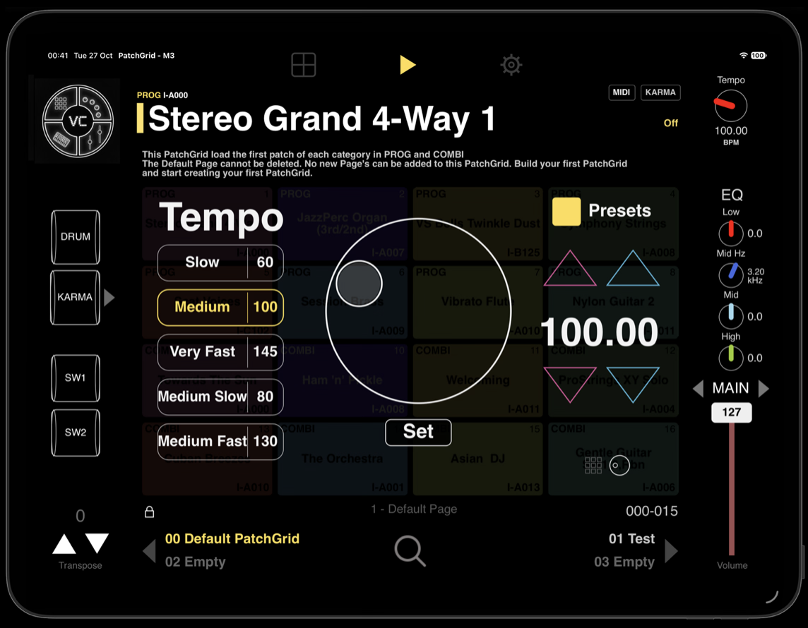
KARMA Controls popup
Tap the small arrow beside KARMA On/Off to open the KARMA Controls popup. Use KARMA Link to link Drum Track operation to KARMA, and use Latch to switch KARMA Latch on or off.
For a COMBI, direct Module buttons select M, A, B, C, or D. A PROG uses the master module only. Direct Scene buttons select Scene 1 through Scene 8. The Module and Scene previous and next arrows step through the available values and wrap at the ends.
Use the Module or Scene Reset control to restore that original value. The main Reset restores the patch's original KARMA On/Off, Link, Latch, Module, and Scene settings. Tap outside the popup to close it. The KARMA On/Off control remains available while the popup is open.
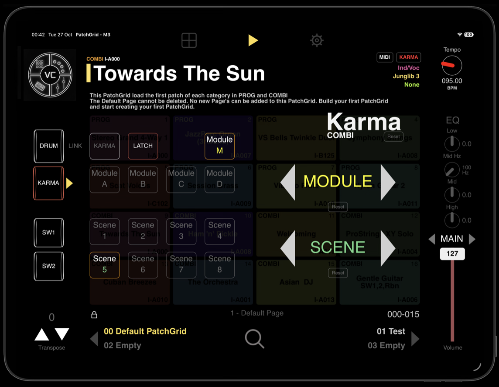
On a normal PatchGrid page, use Save to store the current performance-control values for the selected patch on that page. When that patch is loaded again, its saved controls are restored and sent to the M3, and Save is highlighted. Tap the highlighted Save button to remove only that patch's saved controls for the current page and return to the patch's normal controls. Save is not available for the protected Default PatchGrid.
In Play mode, drag a filled slot horizontally through patch numbers in its bank or vertically through categories. Both directions wrap at the end. During the drag, the selected slot shows the previous, current, and next patch names; the preview disappears when the drag ends and the selected patch is saved.
To fill an empty slot by dragging through patches, start a straight drag on the empty slot and continue through the available patch selection. The selected slot changes as the drag continues and the final selection is saved when the drag ends.
The MIDI Status Strip initially shows MIDI. Tap it to expand SYSEX, PC, CC, BANK, and NOTE, then tap again to collapse it. The KARMA Status Strip initially shows KARMA; tap it to show LATCH or OFF, the active module, and the scene for the selected slot.
When the selected PROG or COMBI contains drum-track data, Play mode shows the drum pattern category, drum pattern, and drum kit above the performance controls. PatchGrid resolves these names from the loaded M3 MIDI dump and its drum pattern and drum kit lookups.

Search
Open Search using the magnifying-glass icon in the centre of the PatchGrid selector in Play view. Wait for patch loading to complete first. Search uses the loaded patch catalogue; hearing a result requires a connected instrument. The keyboard stays hidden until you tap the search field.
Target slots, colours, and closing Search
- Mini PatchGrid: tap a slot in the small 4 x 4 grid to choose the assignment target. This preserves the selected result and its Patch Card; choosing a different target alone does not assign the preview.
- Target pages: use the mini-grid page arrows, when available, to target another existing page without closing Search or losing the selected preview.
- Slot colours: tap the same mini-grid target again to cycle its colour. The colour change is saved.
- Search Link: tap the padlock beside the patch-name area to switch between immediate assignment and preview-only result selection. Performance controls remain available while Search is open.
- Result limit: up to 4,096 matches are returned. Narrow the text or filters when you need a smaller set.
- Close: in landscape, tap outside the Search area or press Escape. Closing clears the search text, filters, and preview; it does not undo assignments or colour changes already saved. Dismissing the on-screen keyboard alone leaves Search open.
- Portrait layout: Search is integrated into Play view. Find locates the selected slot's patch in Search; Update assigns the preview to the selected slot. Use the Edit header to leave the portrait Search workflow rather than expecting landscape dismissal.
Text search
Tap the Search field and enter a patch name, part of a name, or a bank/patch number such as I-B050. Results update as you type. Searches ignore letter case; name searches treat punctuation as word separators. Multiple search words can match in any order, including the starts of words. Exact patch numbers and closer name matches appear before less exact matches within each patch-type group.
The field accepts up to 64 printable English letters, numbers, spaces, and punctuation characters. The result strip shows PROG, COMBI, GM, VAR, and DRUMS counts. Tap a group to show only that type; tap it again to remove that result-type filter. Scroll longer lists by dragging, using the scrollbar, or using a mouse wheel.
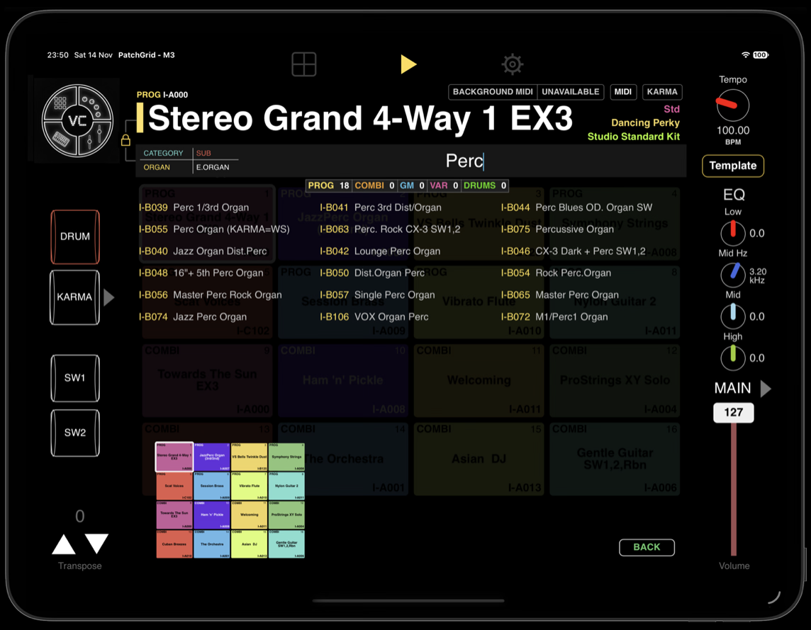
Search filters
Choose PROG or COMBI, then BANK or CATEGORY. BANK offers the available Internal and User banks. PROG bank filtering also includes GM, variations g(1) to g(9), and g(d) for GM drums. INT-F cannot be selected for PROG when no RADIAS board is detected.
CATEGORY lets you choose a category and then a sub-category. Tap a selected bank, category, or sub-category again to deselect it. Changing patch type or switching BANK/CATEGORY clears the previous filter selection. CLEAR removes the bank/category selections.
Tap SEARCH to show matches, with or without text. Text and selected filters work together. The search bar summarises the active bank or category/sub-category. Tap that summary, or BACK in the results view, to return to the filter controls.
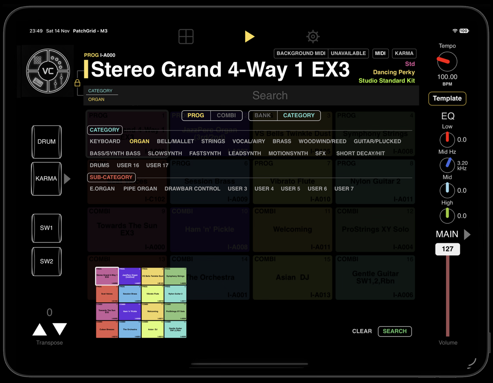
Search selection and slot assignment
Tap a result to show its Patch Card and information: name, type, category, sub-category, source, and patch number. Source can be User, Preset, or Unknown. The selected result is outlined.
Check the Search Link padlock before selecting a result. With the link locked, tapping a result immediately assigns it to the target slot, saves the change, and sends the patch selection to the connected instrument. With the link unlocked, tapping a result changes only the preview and sends no MIDI selection. Tap the large Patch Card to assign the preview to the target slot and send the selection. Search remains open so you can continue selecting sounds.
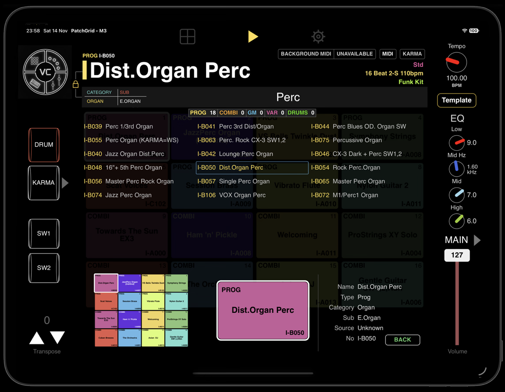
Edit mode
The Edit view is for managing PatchGrids and pages, editing notes, selecting slots, and reviewing the Grid Table. Patch assignment and detailed performance controls are handled from the Play view and Settings.
The selected slot has a thicker outline for clear identification. The VC logo is hidden in Edit mode.
Grid Table view
Edit notes
- Click the notes area in Edit mode.
- Type the notes. Notes are limited to 500 characters; the remaining-character counter shows the available space.
- Click Save or Cancel.
Escape cancels an active notes edit. Losing focus does not save it. The notes area scrolls when the text is longer than the visible field. A new Default PatchGrid starts with: “This patch grids load the first of each category in PROG and COMBI to give you some options to try out the sounds.”
Manage PatchGrids
Create
- Open Edit and click New beside Patch Grids.
- Enter a unique, non-empty name of no more than 23 characters.
- Press Return or click Add.
Default PatchGrid is reserved. Escape or Exit cancels without creating a file.
Rename
Select a PatchGrid, click Rename or the pencil icon, edit the name, then confirm with Return or Add. Invalid, duplicate, empty, and reserved names are rejected without changing the existing name.
Pages
- New adds a blank page, up to eight pages.
- Duplicate copies the current page.
- Clear removes assignments and settings from the current page.
- The trash button deletes a page after a second confirmation click.
Page 1 cannot be deleted. The first page of Default PatchGrid cannot be cleared. Tap the combined reorder icon beside Pages to turn page reorder mode on or off, then drag the selected page. The insertion marker shows where it will be placed. The mode remains active until tapped again. The Default PatchGrid cannot receive additional pages; its next-page arrow is hidden. When blocked, the app warns: “The Default Page cannot be deleted. No new Page's can be added to this PatchGrid.”
Clear, duplicate, or delete
Use Clear to empty a selected PatchGrid. Use Duplicate to enter a new unique name, then create an ordinary PatchGrid containing a copy of every page and its slot data. The trash button requires a second confirmation click before deletion. The built-in Default PatchGrid cannot be cleared or deleted.
Copy and paste slots
One slot
- Select the source slot.
- Click Copy.
- Click the target slot.
The patch, controls, and colour are pasted together. Click Copy again to cancel.
Settings
The Settings item contains MIDI, configuration, import, and patch-library workflows.
MIDI settings
M3 Midi connection
Open Settings > MIDI > M3 to choose the MIDI input and output used for communication with the Korg M3.
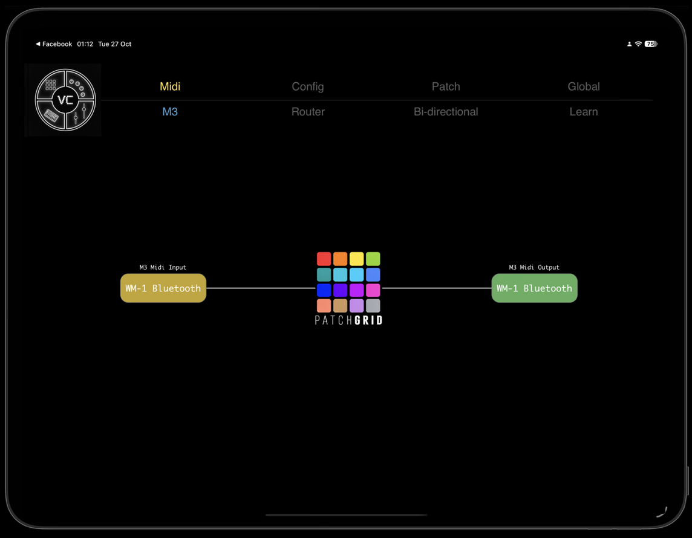
Router
Use Router to add PatchGrid MIDI inputs and outputs. Connect input rows to output rows to create MIDI routing, then configure channel and filtering options for each route.
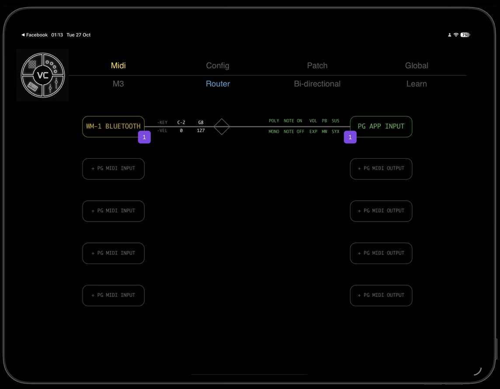
Bi-directional
Use Bi-directional to choose which messages received from the M3 are allowed to update PatchGrid. The available groups are Drum (On/Off, Pattern, and Kit), KARMA (On/Off, Latch On/Off, Drum Link, Module, and Scene), and Patch (Select). Each message can be enabled or disabled independently.
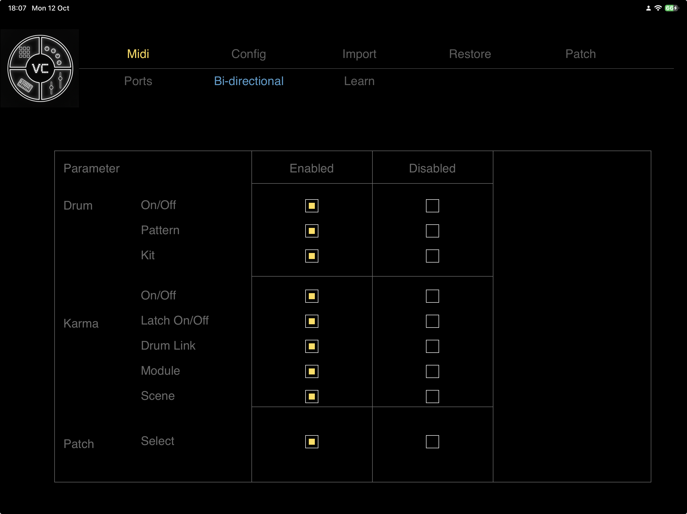
Learn
Use Learn to assign MIDI controls to Volume, EQ, Switch, Transpose, Slot, KARMA, Module, Scene, PatchGrid, PatchList, and Mode.
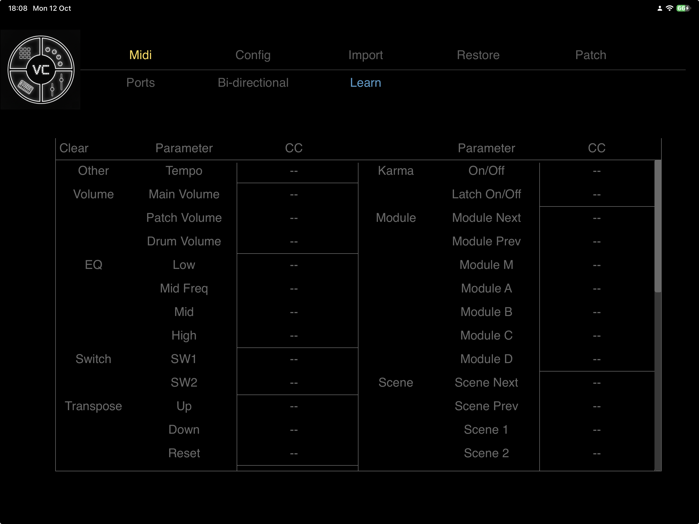
Config settings
General
Backup can be enabled and configured with an interval, retention period, and minimum number of backups. Export writes application data to a selected app.json path.
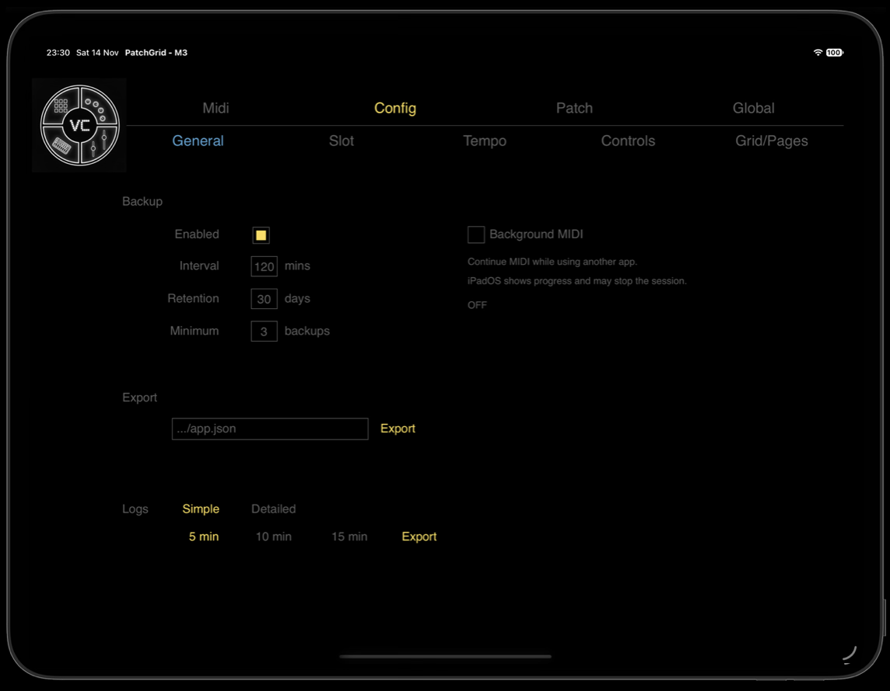
Slot
Slot contains the 4 x 4 grid setup, the slot colour palette, gesture settings, and Slot Drag. Enable Slot Drag when you want to change a slot's patch by dragging in Play mode.
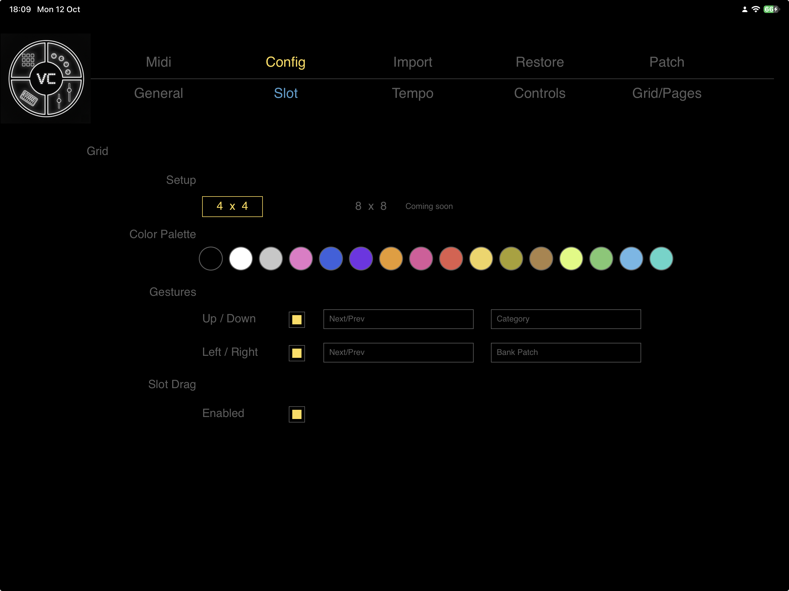
Tempo
Tempo controls the tempo modal. Enable the modal, show or hide presets, choose Keypad or Encoder entry, and enable fine tuning.
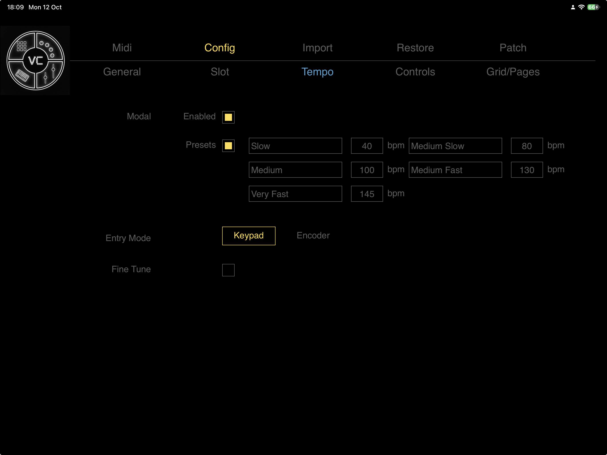
Controls
Controls determines which performance controls are shown in the Play view, including Drum, KARMA, SW1/SW2, Volume, EQ, and the small or full control groups.
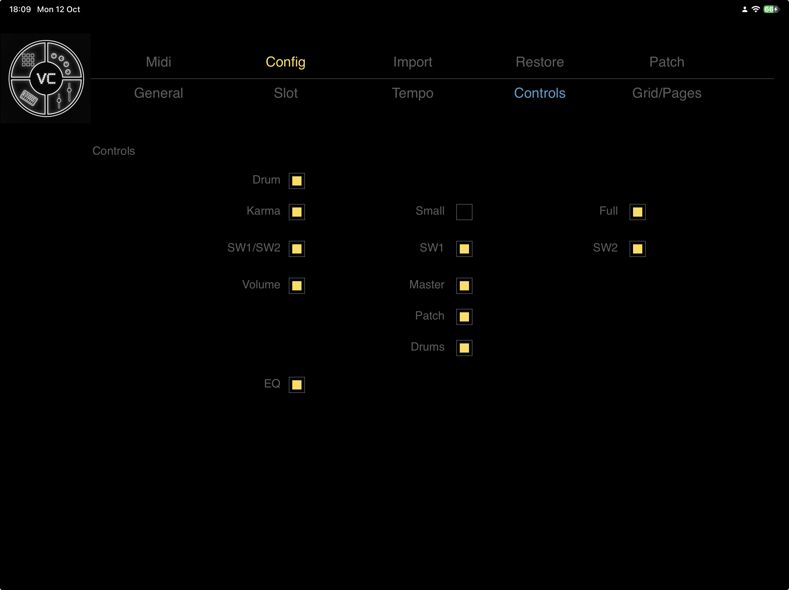
Grid/Pages
Grid/Pages sets the maximum number of PatchGrids, maximum pages per PatchGrid, notes, and note length. Enable INT or USR banks to create template PatchGrids pre-filled with patches from the loaded M3 patch list.
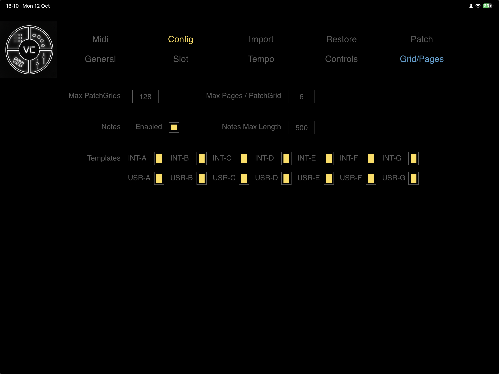
Patch settings
Library / Assign
Open Settings > Patch > Library to assign imported patches to the M3 bank and patch positions recorded in PG. Libraries come from the Import (SysEx) or PCG menus. Importing stores the patch data; assigning tells PG where those sounds belong in the M3 patch selection.
- Select the library imported through the Import (SysEx) or PCG menu.
- Select the COMBI or PROG patches to assign.
- Select the M3 patch destination: INT or USR, the bank, and the patch number as appropriate.
- Click +ADD to add the selection to the assignment review for synchronising PG with the imported M3 patch data.
- Review the source and target rows, then click ASSIGN to save the assignments.
+ADD prepares the list; ASSIGN commits it. Match the destinations to the patch locations already loaded on your M3. Library assignment updates PG's patch records; it does not upload the imported sounds to the instrument.
Import from the M3
Use Import to read patch data from the connected M3 into the application's patch storage.
- Open Settings using the Gear icon and choose Import.
- Choose the patch type and the banks, categories, sub-categories, or patches to read.
- Click Start to begin the MIDI extraction.
- Wait for extraction to finish before returning to PatchGrid.
Import is the device-connected workflow. It requests Program, Combination, or GM patch data from the M3 and stores the returned data. Click Cancel while extraction is in progress if you need to stop it.
Why include PROG with COMBI? A COMBI refers to the Programs used by its timbres; the COMBI data alone do not contain those Program sounds. Importing the matching PROG data gives PG the information needed to resolve those timbres. Choose Import All PROG for a wider COMBI/PROG library, or Import Required PROG for only the selected Combis' required Programs. Leaving both options off imports no accompanying Programs.
Import (SysEx): COMBI with all PROG
Connect to the M3, then open Settings > Patch > Import. Choose COMBI and select the required patches or banks; use All for the full COMBI selection. Choose Import All PROG to read the accompanying Program set from the device, then click Start.
Keep the M3 connected while the patch counter and progress bar advance. CANCEL stops an import in progress. When finished, open Library / Assign to map the imported COMBI and PROG data to the locations used on your M3.
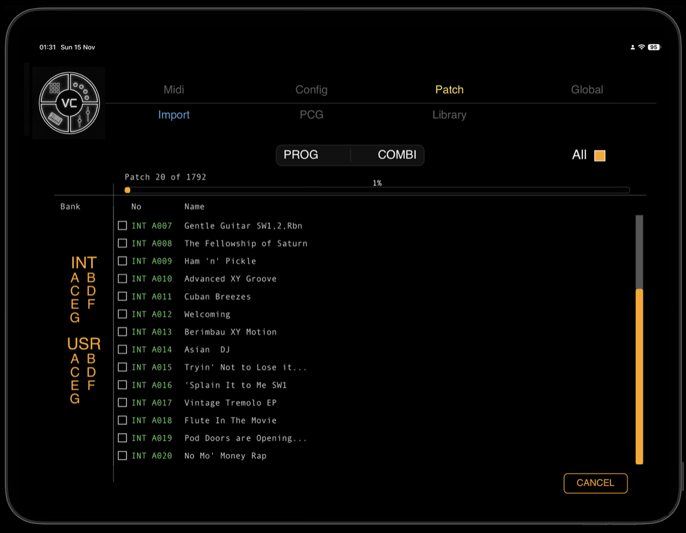
PCG import: COMBI with all PROG
Open Settings > Patch > PCG, click Load, and choose a compatible M3 PCG file containing both COMBI and PROG data. Select the Combis to import, or use Select All for the displayed selection. After loading the file, choose Import All PROG to include all eligible, visible Programs in that PCG, then start the import.
PG analyses the file and resolves Combination dependencies, as shown below. It cannot import Program data that are absent from the PCG. Check Hide Init Patches if you intend to exclude initialised patches; leave it off if those patches must also be included. After import, use Library / Assign to synchronise PG's patch positions.
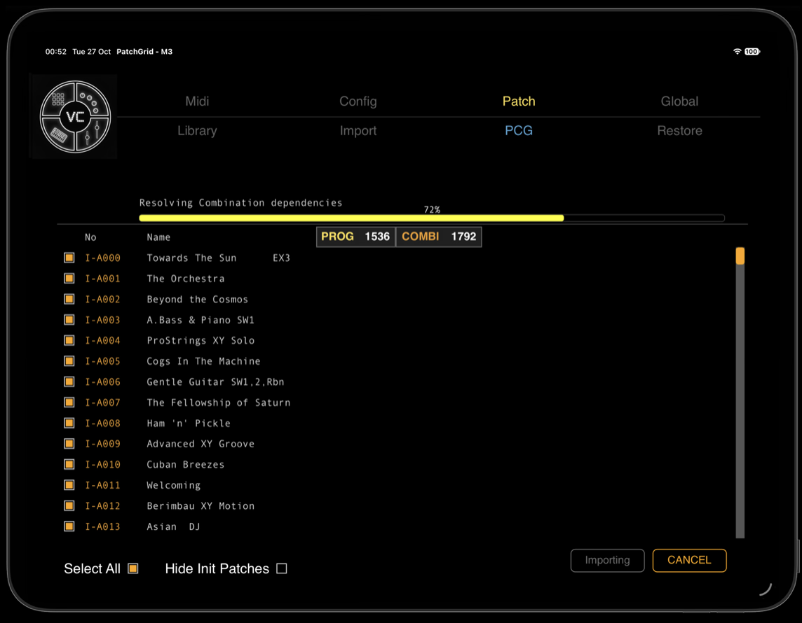
Assign a complete COMBI and PROG set
Select the imported PCG library, then use +ALL in the COMBI section. PG also selects PROG +ALL so the combined set is included. Add it to the review and check the source and target summaries before clicking ASSIGN.
The example shows All Combi (7 banks) and All Prog (7 banks) assigned to Internal A-G. It illustrates the complete seven-bank COMBI/PROG selection, rather than assigning each patch separately. Wait for the progress bar to finish; CANCEL is available while assignment is running.
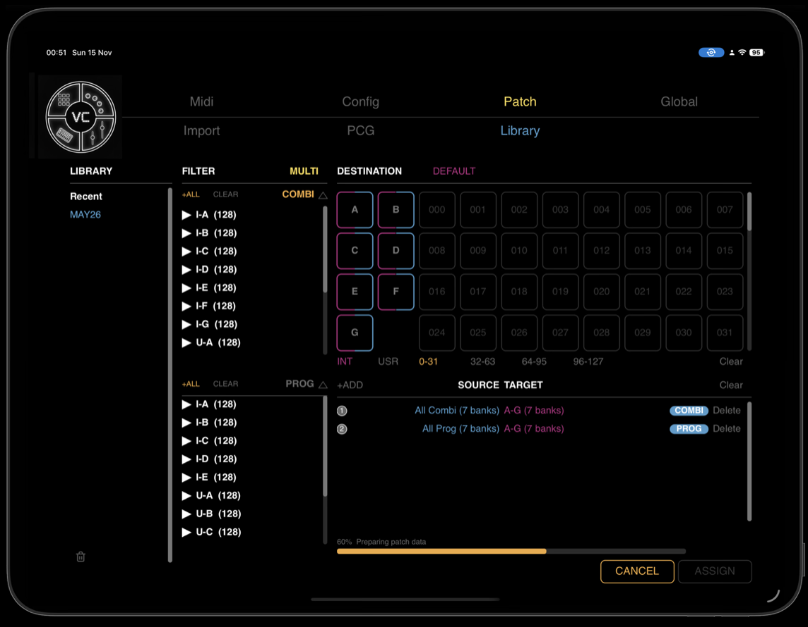
Assign one COMBI with its timbre programs
Expand a COMBI bank and select the required Combination. Choose its destination bank and patch number, then click +ADD. Expand the pending COMBI row to review the dependent programs shown as TIMBRE rows.
Click ASSIGN to include the COMBI and its required available timbre programs in PG's assignments. Check their source and target positions as well as the COMBI destination. Missing or invalid dependencies must be resolved; a broken COMBI is not silently assigned as a complete sound.
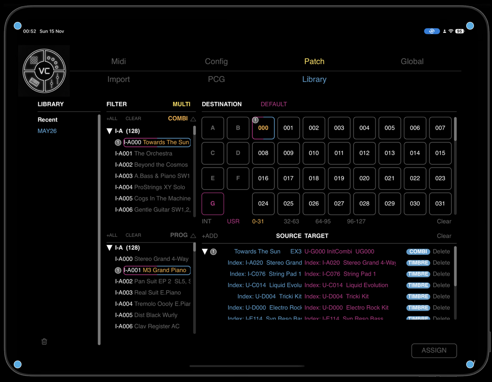
Global
Open Settings > Global to access Basic, Audio, Category, and SubCategory. Basic and Audio share an editable set of Global settings. A connected M3 and complete Global data are needed to apply changes. These are instrument-wide settings, separate from the controls saved with an individual PatchGrid slot.
Apply changes to the M3
- Connect to the M3 using the correct MIDI input and output.
- Adjust the required controls in Basic and/or Audio.
- Tap APPLY at the bottom-right of either screen to send the combined Basic and Audio edits to the M3.
- Wait while the button shows orange BUSY. Green DONE indicates that the M3 acknowledged the transfer. Red FAILED indicates a rejected, unsuccessful, or timed-out transfer; check the connection and retry.
The Apply control is dimmed when the M3 is disconnected. If Global data are unavailable, allow the app to receive them from the M3 before retrying. Changing a staged control alone does not send that change to the instrument.
Immediate effect switches
IFX, MFX, and TFX under Effect Global SW take effect immediately on a connected M3. They do not require APPLY. IFX toggles the insert-effect group; MFX toggles the master-effect group; TFX toggles the total effect. If any effect in an IFX or MFX group is enabled, tapping the group disables it; tapping a fully disabled group enables it.
Tap the Effect Global SW heading to disable all three effect groups together. Tap it again to restore their previous states. These switches are live, so their changes are not waiting for APPLY.
Category and SubCategory
Category displays the loaded PROG or COMBI category names. SubCategory displays the sub-categories for the selected parent category. Choose the patch type and parent category to browse the corresponding list. These views browse existing names; they do not edit names or send changes with APPLY.
Basic
Master Tune adjusts tuning from -50 to +50 cents and displays the corresponding reference frequency. Transpose adjusts the global transposition from -12 to +12 semitones. Drag these knobs vertically.
Choose Velocity Curve 1-9, Aftertouch Curve 1-8, and Pre-Midi or Post-Midi for Convert Position. Tap APPLY to send these staged changes. The IFX, MFX, and TFX switches on this screen are the immediate-action exception described above.
Current limitation - Master Volume: the 0-127 slider is displayed and its value is saved in PatchGrid, but this build does not send that value to the M3 in the Global Apply transfer. Do not rely on this slider to change the instrument's volume.
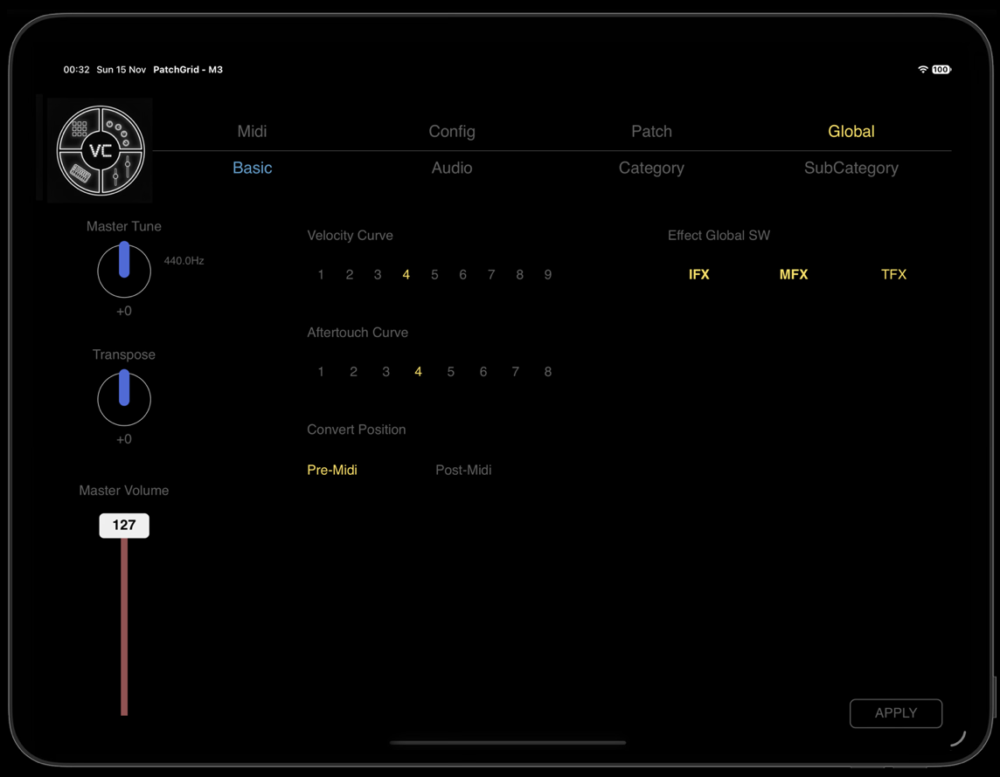
Audio
Choose Analog 1/2 or SPDIF 1/2 as the input source, and L/R, 1/2, or 3/4 as the output destination. Each selection replaces the previous choice in its group.
For INPUT 1 and INPUT 2, adjust the upper LEVEL knob, the lower pan knob, and SEND 1 and SEND 2. Levels and sends use 0-127. Choose the main BUS from Off, L/R, IFX 1-5, individual outputs 1-4, or paired outputs 1/2 and 3/4. FX BUS and AUX BUS each offer Off, 1, or 2.
PLAY enables an input; turning it off mutes that input when applied. SOLO selects one input at a time and mutes the other when applied. Tap the active SOLO again to clear it.
Tap APPLY after editing Audio, including PLAY and SOLO. These controls are staged; they are not immediate effect switches. APPLY sends the Audio edits together with any pending Basic edits.
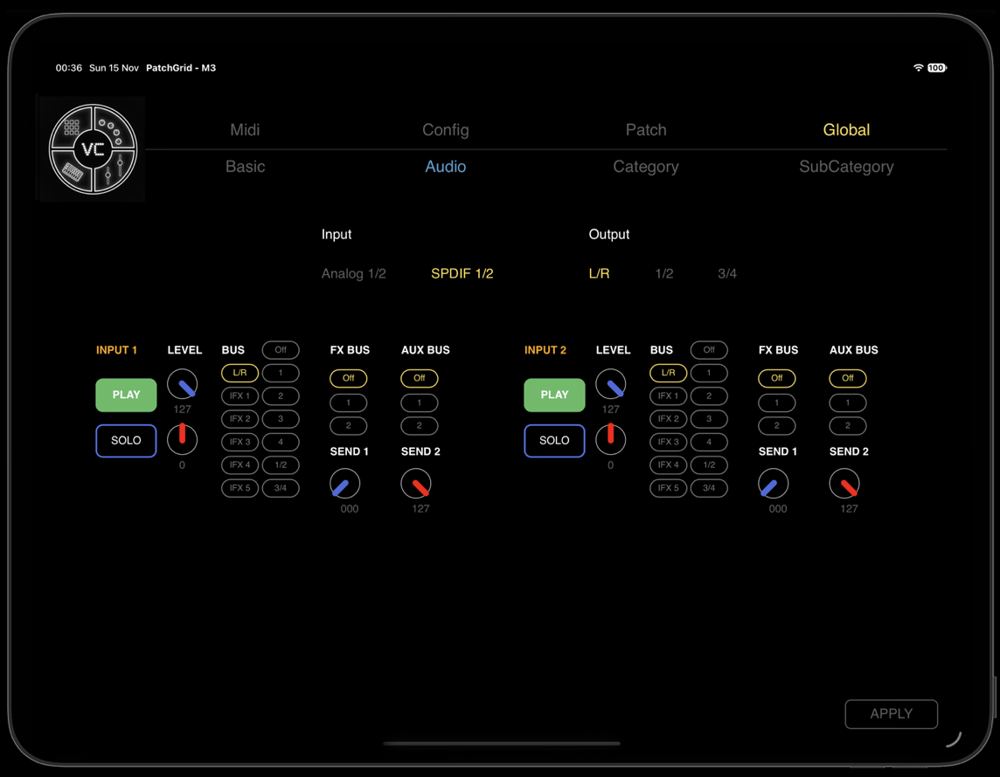
Leave the Settings view
Click the Virtual Controller logo on the left to leave Settings. The app returns to the PatchGrid view after the settings workflow closes.
Saving and persistence
PatchGrid saves assignments, page changes, slot controls, colours, notes, names, and page structure as they change. Performance-control overrides saved with Save belong to a specific patch on a specific page. Returning to Play also commits the current editing state and refreshes the PatchGrid list.
Troubleshooting
Patch names are missing
Wait for patch loading to finish. PatchGrid requires both Program and Combination data before it can build the complete search index and Default PatchGrid.
The M3 does not change sounds
Check the selected MIDI output, connection, MIDI channel, and M3 receive status.
A new PatchGrid was not created
Check the name and confirm with Return or Add. Losing focus does not create it.
A delete or clear action did not happen
Deletion requires a second click. The built-in Default PatchGrid and its first page have additional protection.
Edited text reverted
Use Save for notes or Return/Add for a name. Escape or Cancel restores the previous value.
Quick reference
| Task | Action |
|---|---|
| Select a patch | Play > click a filled slot |
| Move to another page | Click a page arrow |
| Re-order PatchGrids | Edit > tap PatchGrid reorder icon > drag selected PatchGrid |
| Re-order pages | Edit > tap Pages reorder icon > drag selected page |
| Search and assign a patch | Play > search icon > choose a result > assign to selected slot |
| Move slots | Play > unlock slot grid > drag a slot |
| Enable template PatchGrids | Settings > Config > Grid/Pages > enable INT or USR banks |
| Configure MIDI messages | Settings > MIDI > Bi-directional or Learn |
| Assign library patches | Settings > Patch > Library |
| Add a PatchGrid | Edit > New > name > Add or Return |
| Rename a PatchGrid | Edit > Rename or pencil > name > Add or Return |
| Add a page | Edit > Pages > New |
| Duplicate a page | Edit > Pages > Duplicate |
| Copy one slot | Select source > Copy > select target |
Appendix A: Background Midi (iOS 26 or later)
Background MIDI is optional and is available on supported iPads running iPadOS 26 or later (the iPad operating system). It supports MIDI routing and instrument control while you use another app, including MIDI Router connections to external instruments when the M3 connection is skipped. It does not generate audio and does not guarantee uninterrupted background operation. On earlier iPadOS versions, these controls are not shown; use PatchGrid in the foreground.
A.1 Enable Background MIDI at startup
On the Boot screen, select the Background MIDI checkbox beside Connect. The explanation shown below appears. Tap OK to close it; checking the box alone does not start a session. Then select Connect to use the M3, or choose Skip M3 Connection to continue without connecting the M3. Either action requests a background session when Background MIDI is checked. Skip retains separately configured keyboard inputs and MIDI Router routes to external instruments.
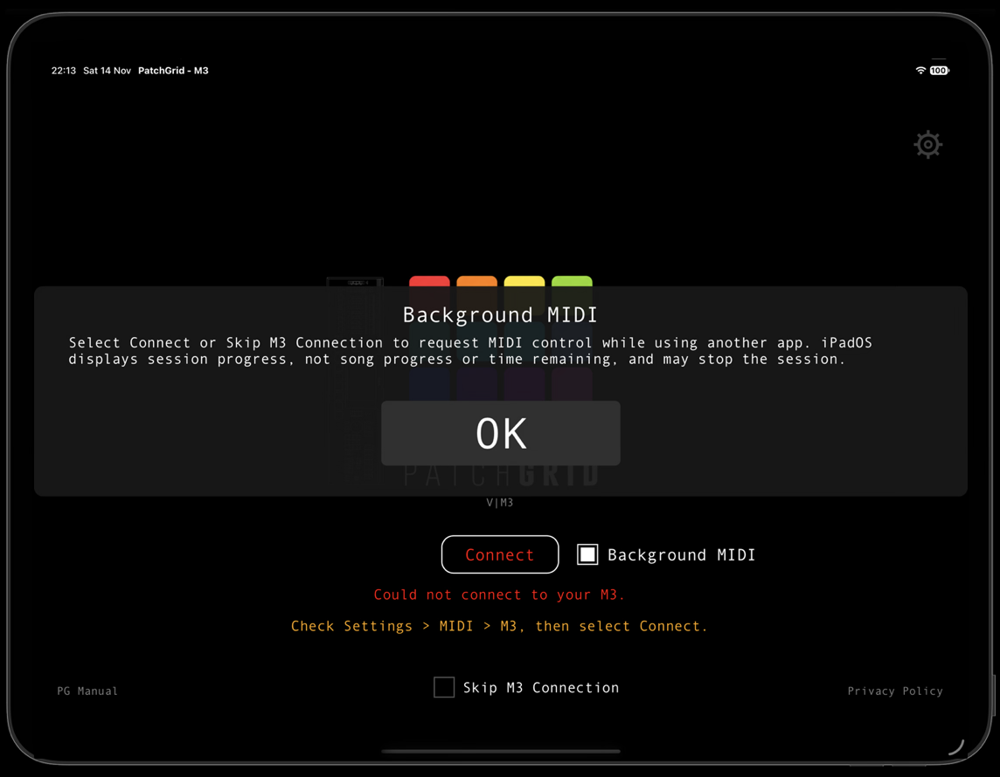
A.2 Understand the system notification
iPadOS displays its own Background MIDI session notification, separate from PatchGrid's InfoStrip. Session time refers to elapsed session time, not song progress or time remaining. iPadOS may refuse or end a session. Check the Background MIDI InfoStrip, beside the MIDI InfoStrip, for PatchGrid's current session status. An active session shows elapsed time.
In this screenshot, Apple's notification shows a session time and a check mark while PatchGrid's InfoStrip reads STOPPED. It illustrates the system notification, not confirmation that a session is still running. A notification alone does not prove that MIDI messages are being transmitted.
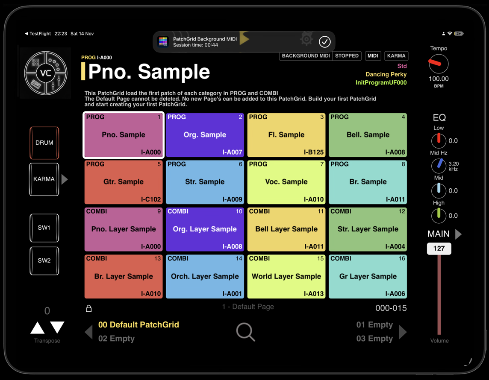
A.3 Stop a background session
While a session is active, tap the Background MIDI InfoStrip next to the MIDI InfoStrip. The dialog shows Background MIDI active. Tap Stop Session to end the background session, or Cancel to leave it running. Stopping the session does not disable normal foreground MIDI or close the configured MIDI ports. Keep PatchGrid in the foreground to continue using MIDI reliably.
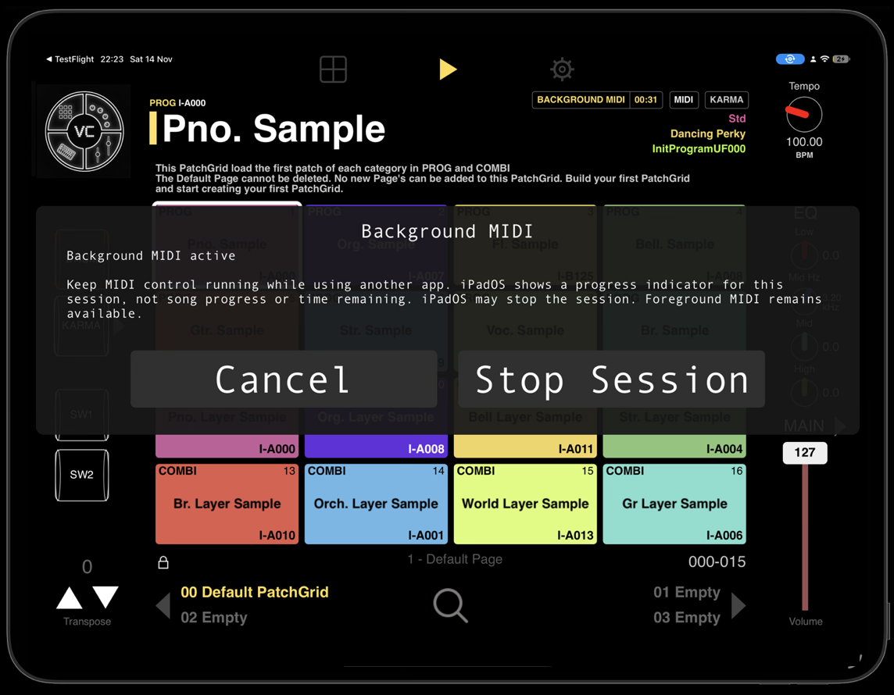
A.4 Start a session again
After a session has stopped, tap the Background MIDI InfoStrip again. The dialog shows the stopped status and offers Start Session. Tap Start Session to request a new background session, or Cancel to leave it stopped. The elapsed-time display starts when iPadOS accepts and launches the session. If the request is refused, keep PatchGrid in the foreground.
Sessions do not restart automatically after a user or system cancellation. Background MIDI is a per-launch choice; after closing and relaunching PatchGrid, enable it again if required. Session controls are also available from Settings > Config > General > Background MIDI.
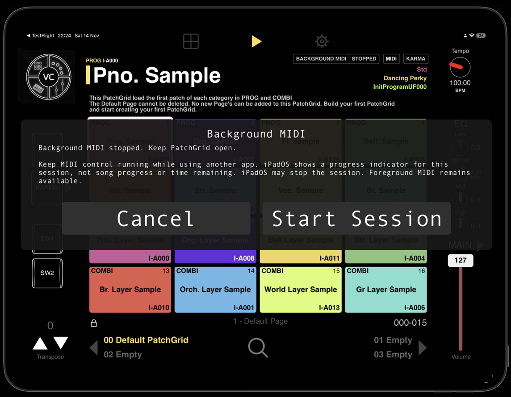